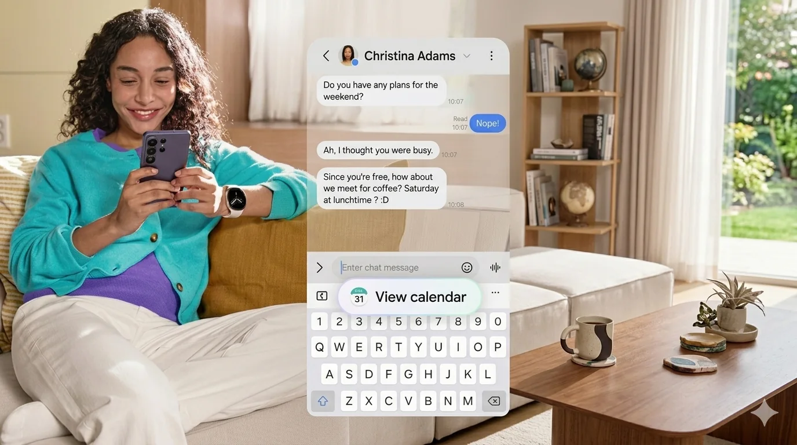
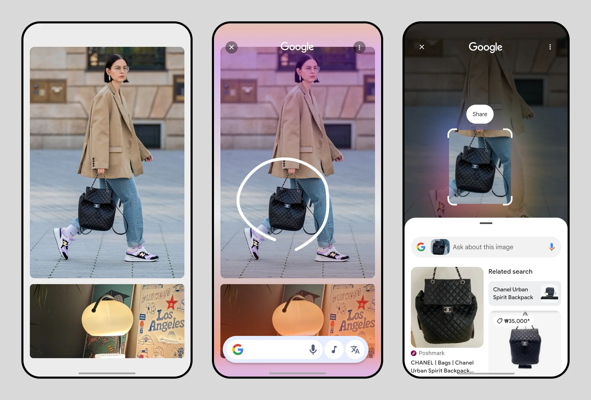
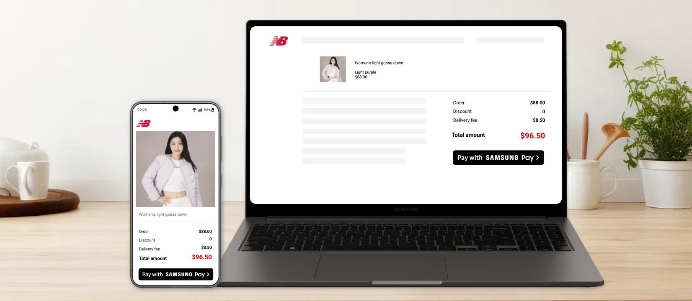
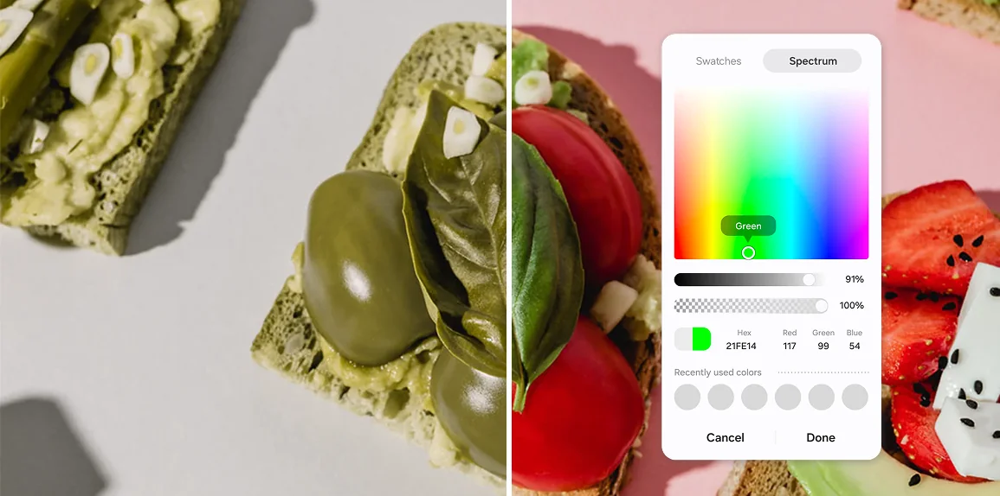
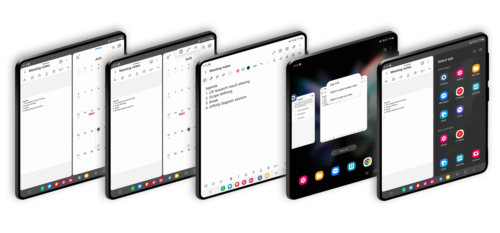

The best AI doesn't wait to be asked.
I'm Chanpio Park. I lead AI OS UX at Samsung, designing the proactive and agentic features in Galaxy AI, including Now Nudge and Gemini Automation.
Selected work

Now Nudge
A proactive layer in One UI that reads what's on screen and offers one action, right above the keyboard.
- 65Mdevices shipped
- 60%fewer steps on multi-app tasks
- 40%higher task success
Gemini Automation
The interaction framework for delegating multi-step tasks to Gemini on Galaxy, from launch to handoff.
- S26launch partner device
- 3form factors: bar, Flip, Fold

Circle to Search
Samsung-side entry gesture, selection handler, and onboarding for Circle to Search on Galaxy.
- 50Mmonthly active users
- 34%of flagship users use it daily
- 80%less time to finish a visual search

Samsung Pay Web
Cross-device web checkout that replaced form-filling with a QR scan and a fingerprint.
- 60%fewer drop-offs at sign-in
- 86%faster device pairing
- 85%came back to use it again

Color picker for everyone
Clearer names, a consistent hue order, and inclusive feedback, standardized across Samsung apps.
- 2.4xhigher selection success
- 1standard component across apps

Split screen for Galaxy Z Fold
A redesigned multitasking model for foldables, now the core split-screen interaction in One UI.
- 35%faster task completion
- 15%more usage after 3 months
I design systems that notice, offer, and act.
I've spent 15+ years at Samsung, working on Samsung Pay in Seoul, One UI core experiences in New Jersey, and now Galaxy AI, where I lead a team of 8 designers and work closely with Google on Gemini.
My work follows one loop:
- KnowingUnderstand context from what's on screen, without asking.
- AnticipatingOffer the next step only when the intent is clear.
- ActingCarry it out, while the person stays in control.